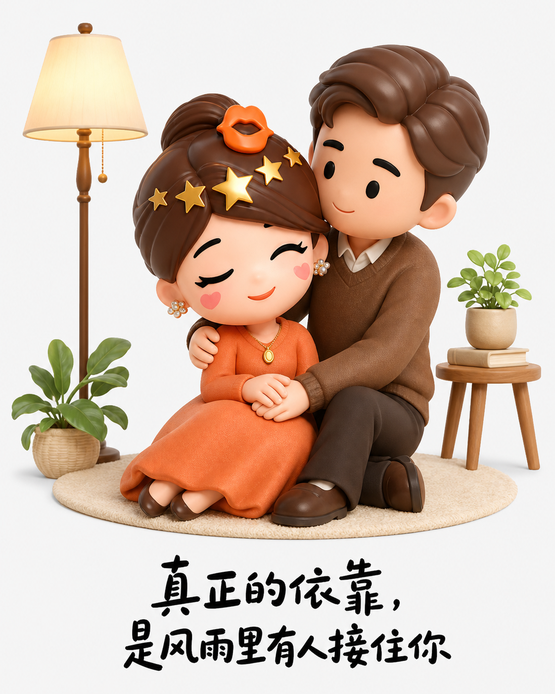
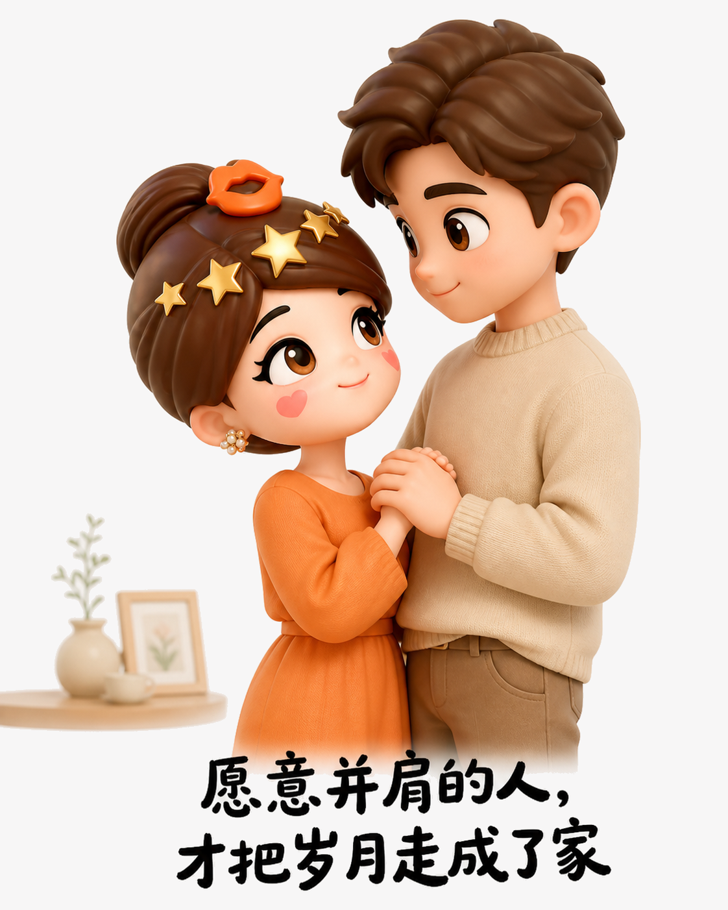

婚姻真正托住人的，是有人愿意并肩
婚姻不是一场完成任务
仪式会结束，热烈也会回到日常。决定两个人能走多久的，不是外界眼光，而是是否愿意把彼此放进未来，共同承担选择的后果。
好的关系，是生活里的同盟
顺利时分享喜悦，难熬时分担压力；遇到问题先站在一起，再寻找答案。婚姻的价值，不是让生活从此没有风雨，而是让人不必独自面对。

被看见，才有安心的底气
亲密不是要求对方永远完美，而是看见平凡、疲惫与脆弱后，仍愿意理解、托底和守护。真正长久的陪伴，藏在一次次平常的回应里。
走得慢没有关系，重要的是身边的人愿意一起走，也让你自在地做自己。
